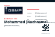
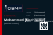
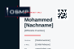

OSMP Visitenkarte Mohammed – 3 Varianten
Format 85 × 55 mm quer, angelegt mit 3 mm Beschnitt als 91 × 61 mm SVG. Keine Schnittmarken im Design. QR-Code führt direkt auf https://osmechplast.com.
Variante 1
Helle Kontaktseite, dunkle Rückseite – sehr seriös und gut lesbar.

Variante 2
Beide Seiten dunkel – stärkste Markenwirkung, sehr kompakt.

Variante 3
Asymmetrisches Raster – technisch, moderner, etwas markanter.

Empfehlung: Variante 1
Variante 1 ist für technische Einkäufer und Industriekunden am stärksten: Der Name ist sofort lesbar, die Kontaktseite wirkt ruhig und professionell, die dunkle Rückseite trägt die Marke klar. Sie passt am besten zu einem CNC-Zulieferer, weil sie präzise, nicht laut und sehr vertrauenswürdig wirkt.
Produktionsdateien liegen in outputs/business-card-mohammed/. Für echte Druckfreigabe bitte Telefonnummer, E-Mail, Nachname und Position ersetzen, danach als PDF/X beim Druckdienst exportieren.